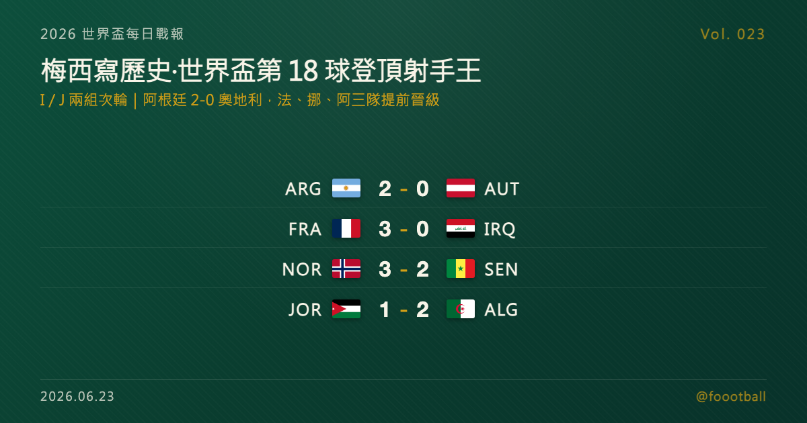

梅西寫歷史：世界盃生涯第 18 球登頂男足射手王，阿根廷 2-0 奧地利提前晉級
2026 世界盃 I、J 兩組次輪四場全部結束，這是一個屬於巨星的夜晚。在阿靈頓，梅西對奧地利梅開二度，世界盃生涯進球累計至 18 球，正式超越克洛澤（16 球）成為男足世界盃史上頭號射手，阿根廷 2-0 提前晉級；費城，姆巴佩在代表法國出賽第 100 場踢進兩球，法國 3-0 伊拉克同步晉級；哈蘭德也梅開二度、挪威 3-2 力克塞內加爾。四場過後，法、挪、阿三隊提前鎖定淘汰賽門票。

2026 世界盃每日戰報 Vol. 023｜C 小組賽｜I／J 兩組次輪賽果
§1 即時比分戰報
2026 世界盃小組賽次輪輪到 I、J 兩組，四場全部結束——而這一夜，屬於三位巨星。在阿靈頓的 AT&T 球場，梅西（Lionel Messi）對奧地利梅開二度，把個人世界盃生涯進球推上 18 球，正式超越克洛澤的 16 球、成為男足世界盃史上頭號射手，阿根廷以 2-0 提前晉級。同一時間，費城的林肯金融球場，姆巴佩（Kylian Mbappé）在自己代表法國出賽的第 100 場踢進兩球，加上登貝萊（Ousmane Dembélé）錦上添花，法國 3-0 完勝伊拉克、同步晉級；在東盧瑟福，哈蘭德（Erling Haaland）也梅開二度，挪威 3-2 力克塞內加爾。以下是本輪四場賽果：
| 賽事 | 比分 | 場館 | 焦點 |
|---|---|---|---|
| 🇦🇷 阿根廷 — 🇦🇹 奧地利 | 2 - 0 | 阿靈頓 AT&T Stadium | 梅西 38'＋90+5'（梅開二度，世界盃生涯第 18 球登頂史上射手王） |
| 🇫🇷 法國 — 🇮🇶 伊拉克 | 3 - 0 | 費城 Lincoln Financial Field | 姆巴佩 14'＋54'（百場代表作梅開二度）、登貝萊 66'；半場雷暴中斷逾兩小時 |
| 🇳🇴 挪威 — 🇸🇳 塞內加爾 | 3 - 2 | 東盧瑟福 MetLife Stadium | 佩德森 43'、哈蘭德 48'＋58'（梅開二度）；薩爾 53'、93' 兩度追分仍不敵 |
| 🇯🇴 約旦 — 🇩🇿 阿爾及利亞 | 1 - 2 | 聖塔克拉拉 Levi's Stadium | 阿拉什丹 36' 先進；本布瓦利 68'、古伊里 82' 頭槌逆轉 |
四場分屬 I、J 兩組次輪。I 組由法國、挪威兩支全勝之師以 6 分並列領跑，雙雙提前晉級，塞內加爾與伊拉克則因兩戰全敗、提前出局；J 組阿根廷兩戰全勝、同樣鎖定晉級，奧地利與阿爾及利亞各拿 3 分、緊咬第二名之爭。§2 是兩組目前的形勢，§4 與同步發佈的特刊則聚焦今晚最大的主角——梅西與他改寫歷史的第 18 球。
§2 排行榜區：I／J 兩組次輪過後形勢
I 組（次輪打完）——法國與挪威雙雙兩戰全勝、同積 6 分，靠淨勝球分先後（法國 +5、挪威 +4），兩隊都已提前晉級淘汰賽；塞內加爾、伊拉克兩戰全敗、雙雙 0 分，已確定出局：
| # | 球隊 | 賽 | 勝 | 和 | 負 | 進 | 失 | 差 | 分 |
|---|---|---|---|---|---|---|---|---|---|
| 1 | 🇫🇷 法國 | 2 | 2 | 0 | 0 | 6 | 1 | +5 | 6 |
| 2 | 🇳🇴 挪威 | 2 | 2 | 0 | 0 | 7 | 3 | +4 | 6 |
| 3 | 🇸🇳 塞內加爾 | 2 | 0 | 0 | 2 | 3 | 6 | -3 | 0 |
| 4 | 🇮🇶 伊拉克 | 2 | 0 | 0 | 2 | 1 | 7 | -6 | 0 |
J 組（次輪打完）——阿根廷兩戰全勝、以 6 分與淨勝球 +5 獨自領跑，提前晉級；奧地利與阿爾及利亞各拿 3 分（首輪一勝、次輪一負/一勝），靠淨勝球暫分先後（奧地利 0、阿爾及利亞 -2）；約旦兩戰皆墨、墊底：
| # | 球隊 | 賽 | 勝 | 和 | 負 | 進 | 失 | 差 | 分 |
|---|---|---|---|---|---|---|---|---|---|
| 1 | 🇦🇷 阿根廷 | 2 | 2 | 0 | 0 | 5 | 0 | +5 | 6 |
| 2 | 🇦🇹 奧地利 | 2 | 1 | 0 | 1 | 3 | 3 | 0 | 3 |
| 3 | 🇩🇿 阿爾及利亞 | 2 | 1 | 0 | 1 | 2 | 4 | -2 | 3 |
| 4 | 🇯🇴 約旦 | 2 | 0 | 0 | 2 | 2 | 5 | -3 | 0 |
本屆晉級規則：12 個小組、每組前兩名加上 8 個最佳第三名，共 32 隊晉級淘汰賽。I 組大勢已定——法國與挪威確定晉級，末輪的兩隊直接對話將決定誰是頭名；塞內加爾與伊拉克則已確定出局。J 組則仍有看頭：阿根廷已鎖定晉級，但奧地利與阿爾及利亞末輪正面對決，勝者極可能搶下小組第二，約旦則已被外電判定出局。末輪（美加墨 6/26、6/27）的對位是：I 組挪威對法國、塞內加爾對伊拉克；J 組阿爾及利亞對奧地利、約旦對阿根廷。
§3 賽事摘要
- 阿根廷 2-0 奧地利：本日、也是本屆至今最具歷史份量的一戰。梅西第 38 分鐘攻入個人本場、也是世界盃生涯第 17 顆進球，正式超越德國名宿克洛澤的 16 球、登上男足世界盃史上頭號射手寶座；補時階段他再下一城，把生涯總數推上 18 球。這顆球也讓他超越女足世界盃紀錄保持者瑪塔（Marta，17 球）。阿根廷以 2-0 全取三分、提前晉級淘汰賽。本場焦點與梅西的世界盃軌跡，詳見 §4 與同步發佈的特刊。
- 法國 3-0 伊拉克：屬於姆巴佩的里程碑之夜。法國隊長在自己代表國家隊出賽的第 100 場，第 14 分鐘與奧利塞（Michael Olise）做出二過一配合後弧線破門先馳得點，第 54 分鐘再下一城梅開二度；登貝萊第 66 分鐘錦上添花，鎖定 3-0。值得一提的是，這場比賽因半場一度遭遇雷暴，中場休息延長逾兩個多小時才恢復。法國兩戰全勝、提前晉級，延續了連續八屆大賽闖進淘汰賽的穩定。
- 挪威 3-2 塞內加爾：一場高潮迭起的進球大戰。挪威由佩德森（Marcus Holmgren Pedersen）第 43 分鐘先開紀錄，哈蘭德下半場第 48、58 分鐘梅開二度、把比分拉開到 3-1；薩爾（Ismaïla Sarr）則為塞內加爾在第 53 分鐘與補時第 93 分鐘兩度建功、苦追到 3-2，但仍無力回天。哈蘭德兩場世界盃已累計 4 球、暫居本屆射手榜前列，挪威兩戰全勝、提前晉級。
- 約旦 1-2 阿爾及利亞：一場逆轉好戲。約旦由阿拉什丹（Nizar Al-Rashdan）第 36 分鐘的精彩遠射先取得領先，但阿爾及利亞下半場連扳兩城——本布瓦利（Nadhir Benbouali）第 68 分鐘頭槌追平，替補登場的古伊里（Amine Gouiri）第 82 分鐘再以頭槌完成逆轉，2-1 拿下關鍵三分，把晉級的主動權重新握回手中。
§4 焦點觀察｜梅西的第 18 球，一個時代的標記
世界盃踢了快一百年，男足射手榜的最高處，今晚換了一個名字。
在阿靈頓，梅西對奧地利梅開二度：第 38 分鐘的進球，是他世界盃生涯的第 17 顆，一舉超越德國名宿克洛澤保持的 16 球紀錄，登上男足世界盃史上頭號射手；補時階段的第二球，更把這個新紀錄推上了 18 球。對一位再過兩天就要迎來 39 歲生日的球員而言，能在第六度征戰世界盃的舞台上、以這樣的方式改寫歷史，本身就是一種難以複製的傳奇。
這顆球的份量，遠不只是一個數字。梅西的世界盃進球，橫跨 2006 到 2026 整整二十年、六屆賽事——從 18 歲初登場時的青澀，到 2022 年率領阿根廷捧起大力神盃的圓滿，再到此刻以衛冕冠軍隊長之姿改寫紀錄。克洛澤的 16 球，曾被認為是難以撼動的高牆；如今這道牆，被一位本應在生涯暮年的球員，用一種近乎不講道理的穩定推倒。憑這場勝利，阿根廷也兩戰全勝、提前晉級。
在梅西的歷史時刻之外，這一夜還有兩位巨星同框。費城，姆巴佩在自己的第 100 場法國代表賽踢進兩球，率領衛冕亞軍的法國 3-0 完勝伊拉克、提前晉級；東盧瑟福，哈蘭德也梅開二度，挪威 3-2 險勝塞內加爾。一個夜晚，梅西、姆巴佩、哈蘭德三位不同世代的頂級射手各自梅開二度，像是世界盃送給球迷的一份厚禮——一位是改寫歷史的傳奇、一位是當打之年的隊長里程碑、一位是新世代的進球機器，三條不同的故事線在同一個夜晚交會，恰好濃縮了世界盃最迷人的地方：它既是紀錄的舞台，也是世代交替的見證。
放眼 I、J 兩組，本輪的關鍵詞是「強者愈強」：法國、挪威、阿根廷三支球隊提前晉級，把懸念留給了第二名之爭與末輪的頭名對決。對球迷而言，好戲才正要開始。
📖 完整特刊《梅西第 18 球：超越克洛澤，登頂世界盃史上頭號射手》已同步發佈，把這顆破紀錄進球的來龍去脈、梅西橫跨二十年六屆世界盃的進球軌跡、這項紀錄的歷史座標，以及阿根廷衛冕之路的下一步，完整講透： 👉 https://foootball.twtools.cc/articles/worldcup-special-2026-06-23-argentina/
§5 接下來看點
I、J 兩組次輪收官後，末輪的戲碼也已浮現。I 組的看點全在頭名：法國與挪威同積 6 分、雙雙晉級，末輪兩隊直接對話將決定誰是小組第一——這既關乎淘汰賽的對位，也是兩支全勝之師的正面較量；另一場塞內加爾對伊拉克，則是兩支已出局球隊的榮譽之戰。J 組更為膠著：阿根廷已鎖定晉級，但奧地利與阿爾及利亞同積 3 分、末輪正面對決，這場「第二名生死戰」的勝者極可能搶下淘汰賽門票；約旦則已被外電判定出局，末輪對阿根廷只剩榮譽之戰。兩組目前法、挪、阿三隊確定晉級，末輪將決定最終的頭名與第二名歸屬。與此同時，本屆其餘小組的次輪賽事也將陸續登場。最新的賽果與形勢，Vol. 024 接著報。
常見問題
Q：梅西現在世界盃進了幾球？破了誰的紀錄？ A：梅西世界盃生涯累計 18 球，正式超越德國名宿克洛澤（Miroslav Klose，16 球），成為男足世界盃史上頭號射手；這個數字也超越了女足世界盃紀錄保持者瑪塔（Marta，17 球）。他的進球來自 2006 至 2026 期間的五屆世界盃（2010 年參賽但未進球）；據賽事數據統計，他已連續 6 場世界盃比賽都有進球。
Q：6/22 這輪有哪些球隊提前晉級了？ A：共有三隊鎖定淘汰賽門票——I 組的法國（3-0 勝伊拉克）與挪威（3-2 勝塞內加爾），以及 J 組的阿根廷（2-0 勝奧地利），三隊都是兩戰全勝。同組的塞內加爾與伊拉克則因兩戰全敗、提前出局。
Q：姆巴佩這場有什麼特別之處？ A：這是姆巴佩代表法國出賽的第 100 場，他在這個里程碑之夜梅開二度、率隊 3-0 完勝伊拉克並提前晉級。比賽因半場遭遇雷暴，中場休息一度延長逾兩個多小時才恢復。
Tags: 世界盃, 2026世界盃, 梅西, 阿根廷, 姆巴佩, 哈蘭德